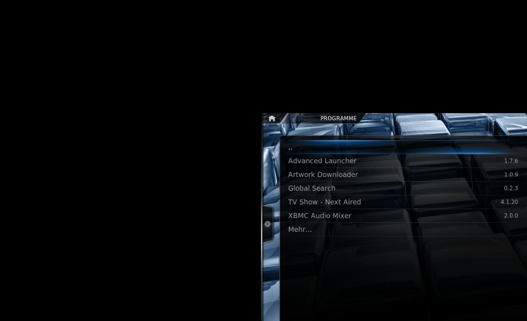

<div class="header"><h1 class="slidetitle">Start programs</h1></div>

<div class="main wide">

<div class="text">

<div class="featured">
<h2 class="subtitle">You can easily configure XBMC to start different kinds of programs out of the XBMC GUI</h2>
<ul>
	<li>
	
	<p class="caption">Launchers</p>
	</li>
	<li>
	
	<p class="caption">TV Guides</p>
	</li>
	<li>
	
	<p class="caption">Downloaders</p>
	</li>
	<li>
	
	<p class="caption">... and many more</p>
	</li>
</ul>
</div>

</div>



</div>
